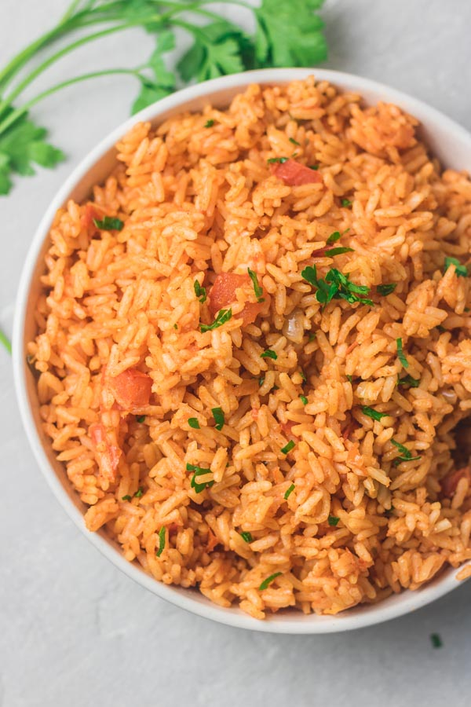

Time Info
- prep: 10 mins
- cook: 20 mins
- additional: 5 mins
- total: 35 mins
- Servings: 4
Description
This Instant Pot Mexican Rice or Spanish Rice is easy to make, tastes like your fav Mexican restaurant and comes together in under 35 minutes in one pot. Make this delicious and flavorful rice as a side dish for tacos, burritos or wraps.
Ingredients
- 1 tablespoon avocado oil, or more as needed
- ½ medium onion, finely chopped
- 2 large cloves garlic, minced
- 1 cup long-grain rice
- 1 ½ cups low-sodium chicken stock
- ½ cup tomato sauce
- 1 teaspoon salt
- ¼ teaspoon ground cumin
- 1 pinch cayenne pepper
Steps
- Turn on a multi-functional pressure cooker. select Saute function and adjust to medium. Cover the bottom of the pot with avocado oil. Cook and stir onion until soft, 4 to 5 minutes. Add garlic and cook until fragrant, about 30 seconds.
- Add rice to the pot and mix until coated with oil and lightly browned. Pour in chicken stock; stir any browned bits off the bottom of the pot. Mix in tomato sauce, salt, cumin, and cayenne pepper. Close and lock the lid. Seal the vent and select high pressure function. Set timer for 7 minutes; allow 10 to 15 minutes for pressure to build.
- Release pressure carefully using the quick-release method according to manufacturer's instructions, about 5 minutes. Unlock and remove the lid. Stir rice before serving.
Return to Top
‹ Return to main page